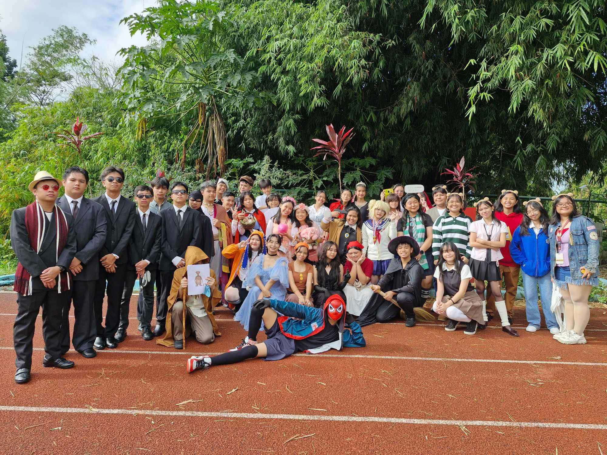
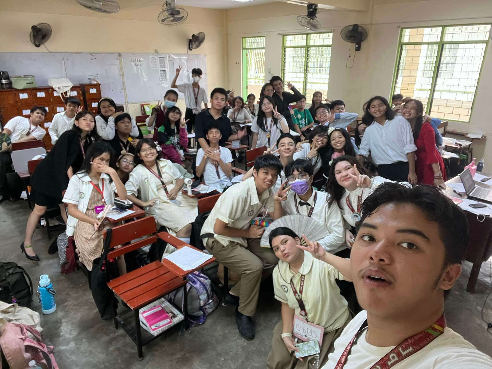
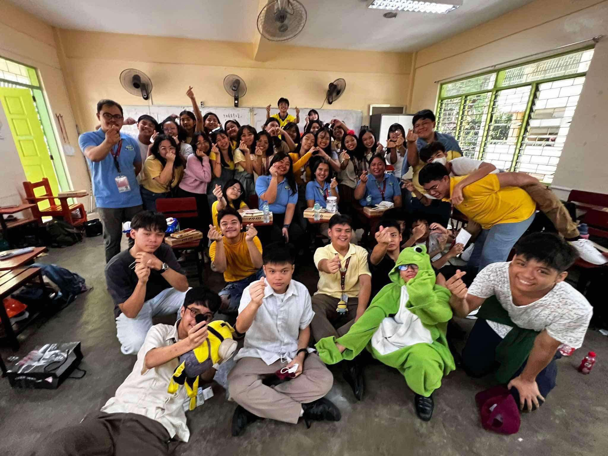
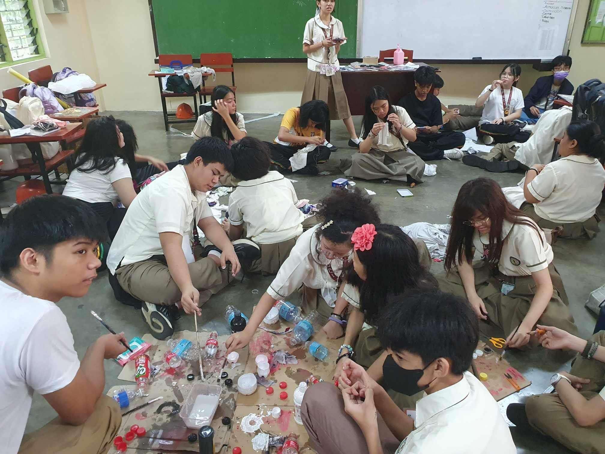

V-pop practice.
Book Character contest. I dressed up as Cady Heron from Mean Girls.
Moments before MAPEH Cha-cha.
Family's Teachers' Day Celebration. The theme was Minions.
Historical Icon costume making. I painted a lot.
V-pop practice.
Post V-pop practice.
Good luck Dewi! (Our Historical Icon representative.)
Lance singing the Family chant.
Go back.